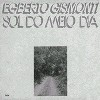
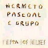
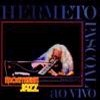
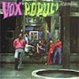

strange music page
overseas * * * brazil
#未来世紀では無くて。
ブラジルっつーか、中南米音楽。
あんまり詳しくないけど。
|
- Egberto Gismonti
- Hermeto Pasocoal
- Caetano Veloso
- mutantes
- vox pupuri
|
#ブラジルの人、このアルバムは余り好きじゃないかも。電子音やらギターやらのごちゃっとした感じ。
- O Trenzinho do Caipira
- Dansa
- Bachiana No.5
- Desejo
- Cantiga
- Cancao do Carreiro
- Preludio
- Pobre Cega
EMI RECORDS: 364-748145-2
#E.Gismontiの1978のECMからのアルバム。なんだかライナーには"dedicated to Spain and the Xingu Inidians..."とか書かれてます、ブラジルのインディアンに捧げるって事ですかね？
TERM CAIPIRAだけ昔買ったんですけど、なんだかあのアルバムの大仰さが合わなくって、ジスモンチはしばらく遠慮してたんですけど......こないだ下のパスコアル買うときに色々
CDNOWとかで試聴してて良さげだったんで買っちゃいました。
2曲目のタブラとギターの緊張感とかも格好良いんですけど、5曲目のJ.Gabarekのサックスが。なにか日が沈んでいくような感じのゆっくりした緊張感、KILLING TIMEにも似たような。

- Palaclo De Pinturas
- Raga
- Kalimba
- Coracao
- Cafe
Sapain
Danca Solitaria No.2
Baiao Malandro
- Egbertro Gismonti (piano on 4.)(8-string guitar on 1.2.5.)(kalimba,wood flute on 3.)
- Collin Walcott (tabla on 1.)(bottle on 5.)
- Nana Vasconcelos (berimbau on 3.5.)(percussions on 2.3.5.)(voice on 5.)
- Ralph Towner (12-string guitars on 1.5.)
- Jan Gabarek (soprano sax on 5.)
ECM RECORDS: ECM-1116 (original release 1978)
- Ensaio de escola de samba (Danca dos Escravos)
- 7 Aneis
- Meninas
- Infacia
- A fala da paixao
- Recife & O amor que move o sol e outras estrelas
- Dance No.1
- Danca No.2
- Egberto Gismonti (piano,guitars)
- Nando Carneiro (synthesizers,guitars)
- Zeca Assumpcao (bass)
- Jacques Morelenbaum (cello)
EMC RECORDS: ECM-1428 (1991)
- Mixing Pot
- Slaves Mass
- Little Cry Form Him
- Cannon (dedicated to Cannonball Adderley)
- Just Listen
- That Waltz
- Cherry jam
- Hermeto Pascoal (piano,rhodes,recorder,clavinet,flute,soprano sax,acoustic guitars)
- Alphonso johnson (bass on 1.)
- Ron Carter (bass on 2-7.)
- Chester Thompson (drums on 1.)
- Airto Moreira (drums on 2-7.)(percussions on 1.)
- Raul De Souza (trombone)
- David Amaro (guitars)
WARNER MUSIC JAPAN: WPCR-10437 (1999.6.23 - origina release 1977)
#エルメート・パスコアルという人です。こんなページ見てる方の中には私なんかより全然詳しい方がきっと結構いらっしゃって、こんなCD当たり前なのかも知れないですけど....ブラジルのインスト音楽の人で、70年代にはM.Davisとも共演してるとか。白髪に眼鏡に天狗鼻で手塚治虫のマンガに出てくるような風貌の人です。
で、このアルバムは1992年のアルバムです。ブラジル音楽やジャズ/フュージョンを基本にしてるみたいなんですけど、鶏の鳴き声や人の声とか「音」の出るもの全てを音楽の要素としてぶち込んでるようなCDです。逆に人の喋り声を元にして音楽に仕立て上げたりとか。
なんてかこんなに制約を感じさせない音楽を聴いたのも久々。色々な要素入れてるのにアヴァンギャルドな感じにならないで、親しみやすいメロディー/展開が有るのも嬉しいです。
以前に
MOON PAGEで話題になってたときから気になってはいたんですけど。こんなに良いならさっさと買えば良かったなと。
あ、とりあえず試聴してみましょう。
Yahoo! Music (聴いたこと無い洋楽捜すの便利っすよ)(2001.5.24)

- O Galo Do Airan
- Rainha Da Pedra Azul
- Viajando Pelo Brasil
- O Farol Que Nos Guia
- Pensamento Positivo
- Peneirando Agua
- Cancao No Paiol Em Curitiba
- Aula De Natacao
- Tr S Coisas
- Irmaos Latinos
- Depois Do Baile
- Quiando As Aves Se Encontram, Nasce O Som
- Round Midnight
- Fazenda Nova
- Ginga Carioca
- Chapeu De Baeta
POLYGRAM: PHCA-4233 (original release 1992)
#
来日するらしいので、「行くぞ～」という気分を高めるために買ってみました。下北沢レコファンにて。
1979年のライヴ盤らしいですけど、なんつーかすっ飛んでます。もうチケット買っちゃおうかと思うくらい。
あ、えーと
上のよかオススメです。やっぱこーゆー無茶な音楽はライヴの方が楽しいみたい。(2002.7.7)

- Pintado O Sete
- Forro Em Santo Andre
- Remelexo
- Bem Vinda
- Sax E Aplausos
- Lagoa Da Canoa
- Fatima
- Terra Verde
- Maturi
- Quebrando Tudo
- Nilza
- Forro Brasil
- Montreux
- Voltando Ao Palco
- E Adeus
- Hermeto Pascoal (sax,pianica,vocals)
- Itibere Luiz Zwarg (bass)
- Nene (drums)
- Santos Neto (piano)
- Zabele (percussions)
- Nivaldo Ornelas (tenor sax)
- Cacau (baritone sax)
- Pernambuco (percussions)
WARNER MUSIC BRASIL: 092741435-2 (original release 1979)
#ブラジル音楽の有名な人ですね。これは1991年のアルバムでプロデュースはアート・リンゼイ、声がとても魅力的で....最近のKevin Ayersなんかにも似たような魅力かな？とても渋いです。
アートリンゼイとの共作の5曲目は、アートリンゼイの「グキョガキョーン」っていうギターが炸裂してる曲です。これだけNYアヴァンギャルドみたいな。
......ところでMPBって何？ブラジル音楽とかほとんど聴かないからわかんない......
- Fora Da Ordem (無秩序)
- Circulado De Fulo (ひまわり)
- Itapua
- Boas Vindas (ようこそ)
- Ela Ela
- Santa Clara, Pdroeira Da Televisao
- Baiao Da Penha
- Neide Candolina
- A Terceira Margem Do Rio (3番目の岸)
- O Cu Do Mundo
- Lindeza
produced by Arto Lindsay
- Caetano Veloso
- Toni Costa
- Arthur Maia
- Marcelo Costa
- Marcos Amma
- Armando Marcal
- Anders Levin
- Sacha Amback
- Babel Gilberto
- Audrey Martells
- Billy Carrion
- Kazu Makino
- Tavinho Fialho
- Jaques Morelenbaum
- Oswaldinho
- Tony Lewis
- Melvin Gibbs
- Marc Ribot
- Amilton Lino
- 坂本龍一
- Arto Lindsay
NIPPON PHONOGRAM: PHCA-109 (1991)
#映画「オルフェ」（黒いオルフェのリメイク版らしい、見てないけど）のサントラです。音楽はCaetano Veloso。
7曲目のジョビンの曲でボーカルを取ってるMaria Luiza Jobimってのはジョビンの娘らしいですね。やっぱイイ曲だなぁと今更ながらに。
前半はボーカル曲、後半はストリングスという構成になってます。前半のCaetanoのボーカル曲とかもイイのですけど、後半のストリングスの曲もとっても好きです。ストリングスの曲なんですけど、ブラジルっぽいっつーかカエターノっぽいっつーか。なんか繰り返し聴いてても全然飽きないです、ブラジル人って凄いなーとかそんな。(2004.2.26)
- O Enredo de Orfeu
- Sou Voce
- Valsa de Euridice
- Cantico a Natureza (Primavera)
- Manha de Carnaval
- Os Cinco Bailes da Historia do Rio
- A Felicidade
- Se Todos Fossem Iguas A Voce
- Sou Voce (Asa Delta)
- A policia Sobe o Morro
- Valsa de Euridice / Lua, Lua Lua
- Alucinacao
- Eu E o Meu Amor (Carmen No Desfile)
- Orfeu Leva Euridice
- Batuque Final
- Mira Mata Orfeu
- Orfeu Dorme
produced by Caetano Veloso
co-produced by Arto Lindsay,Jaques Morelenbaum
- Caetano Veloso (vocals on 1.6.8.)
- Toni Gariano (vocals on 1.2.5.)
- Hitor TP (guitars on 2.3.5.6.10.)
- Zeze Motta (vocals on 4.)
- Nelson Sargento (vocals on 4.)
- Josimar Monteiro (cavaquinho,percussions on 4.)
- Bira Show (percusions on 4.)
- Maria Luiza Jobim (vocals on 7.)
- Ramiro Mussoto (improvisation on 10.)
NONESUCH: 7559-79579-2 (1998)
- ando meio desligado
- quem tem medo de brincar de amor
- ave, lucifer
- descolpe, babe (ごめんね、ベイブ)
- meu refrigerador nao funciona (こわれた冷蔵庫)
- hey boy
- preciso urgentemente encontrar um amigo (友達)
- chao de estrelas
- jago de calcada
- haleluia
- oh! mulher infiel (不実な女！)
- Rita Lee (vocals,flute,percussions)
- Arnaldo Baptista (keyboards,bass,vocals)
- Sergio Dias Baptista (guitars,vocals)
- Liminha (bass)
- Ronaldo Leme (drums,percussions)
MERCURY MUSIC ENTERTAINMENT: PHCA-4229 (original release 1970)
#えーと、1969年のブラジルの.....ソフトロックってジャンルになるんだろーか？ブラジルポップスです。
ちょっと垢抜けないよーな感じがイイです、男6人女1人みたいですね、コーラスもブラジルらしく沢山「♪パッパパパラッパパ」と。曲展開がくるくる変わって、慌てたよーなリズムが可愛いです。どの曲も良。(2002.6.12)

- Ah!
- Caleidoscopio
- Domingo
- EU
- Passarinhada
- Tornado
- Asteroide Sonoro
- Ventania
- Gira Girou
- Here There and Everywhere
- Vera Cruz
- Cicade Grande
VIVID SOUND CORPORATION: VSCD-9007 (original release 1969)